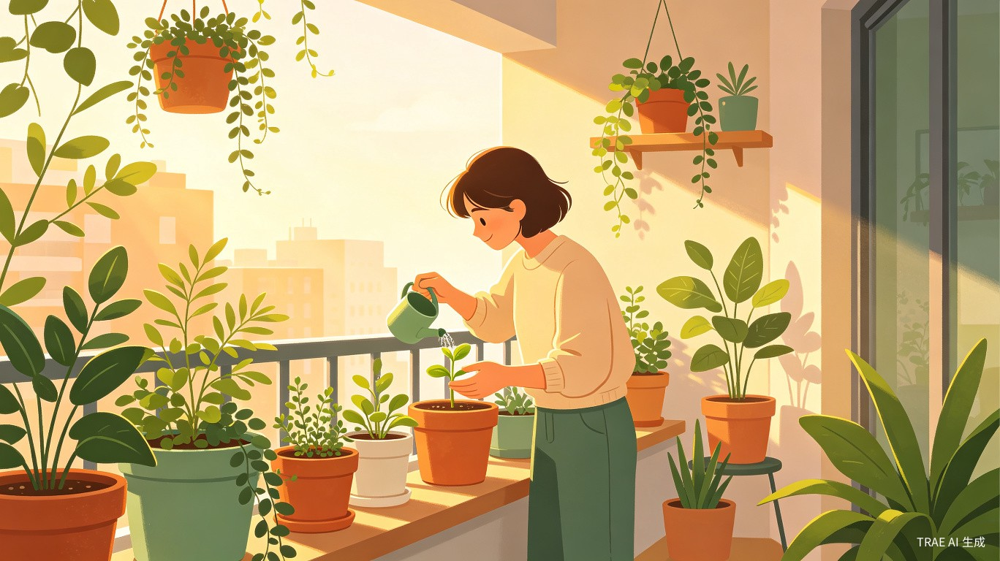
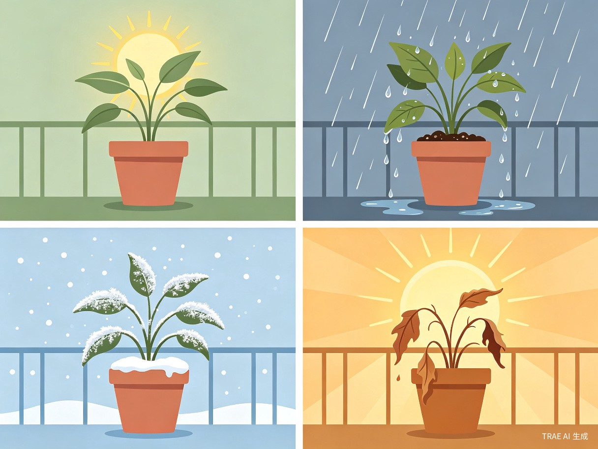
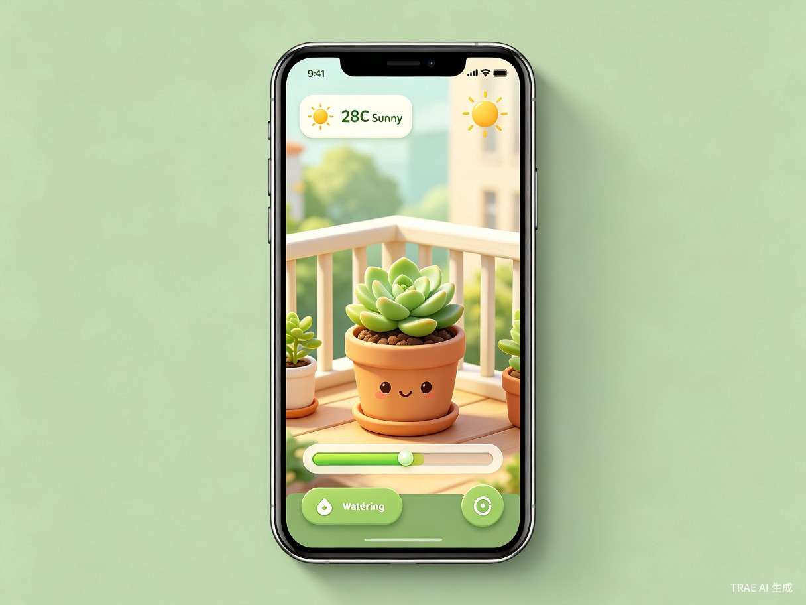
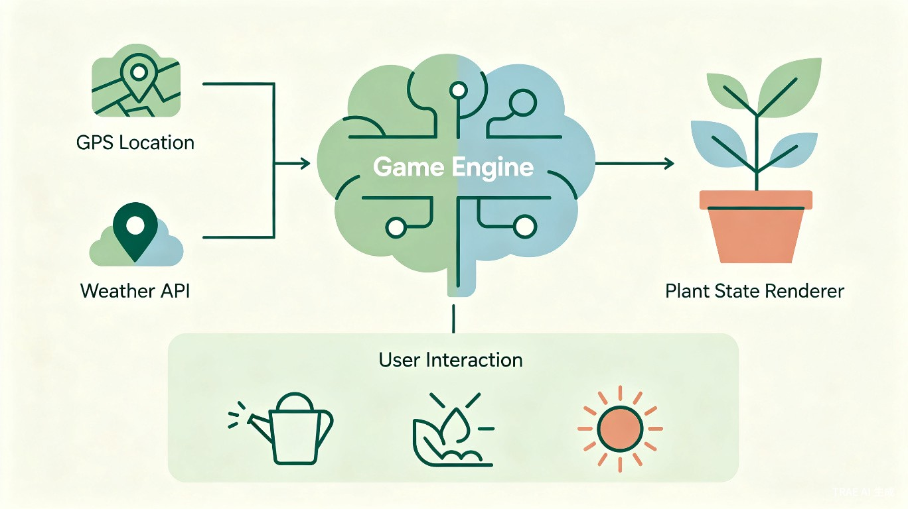

《云芽记》是一款基于地理位置与实时天气数据驱动的数字孪生植物养成游戏。玩家在虚拟阳台中养育一株绿植，而这株植物会根据你所在城市的真实天气、光照、季节实时变化——北京下雨，你的植物也在淋雨；上海入冬，你的植物也会休眠。
与传统"浇水收金币"的养成游戏不同，《云芽记》的核心体验是代入感：你的植物活在与你相同的时空里，它感受着你窗外的阳光和风雨。你需要根据真实天气做出养护决策——今天高温预警，该不该给多肉遮阴？明天有暴雨，要不要把绿萝搬进屋？这种"虚实交织"的体验，让每一次打开游戏都充满新鲜感。
工作忙碌、经常出差，想养植物点缀生活但总忘记浇水，买回来的绿植活不过一个月。
空间有限、光照条件差，阳台朝北或没有阳台，养不了真植物但渴望绿色陪伴。
宿舍不能养宠物和植物，但想要一个低门槛的"陪伴型"养成体验，缓解学业压力。
独居或异地生活，需要一个安静、治愈的数字陪伴，看着植物生长获得内心的平静。
核心痛点：现有虚拟植物游戏（如 Plant Nanny）的植物状态与真实环境完全脱节，玩几天就失去新鲜感。用户渴望的是"真实感"和"陪伴感"，而不是机械的点击操作。
获取玩家 GPS 定位，调用天气 API 获取温度、湿度、降雨、风力、光照强度等数据，驱动植物状态实时渲染：

玩家可以上传自己的阳台照片，AI 生成对应的虚拟阳台背景。植物摆放在真实阳台的虚拟位置上，光照角度根据朝向（东/西/南/北）和季节动态变化，营造出"这株植物就长在我家阳台上"的沉浸感。
玩家可以执行浇水、施肥、移盆、遮阴、补光等操作。系统会根据天气给出智能提醒："今天北京 35°C，你的多肉需要遮阴了"或"明天有暴雨，建议把绿萝搬进屋"。决策正确，植物健康生长；长期忽视，植物可能枯萎（可复活但有代价）。
植物有"心情"状态，基于环境适宜度和玩家互动频率计算。长期陪伴可解锁特殊形态（如养护 3 个月的仙人掌开花），并生成植物成长日记，记录每一天的天气、操作和植物变化，成为玩家与自然连接的情感纽带。

| 维度 | Plant Nanny 等现有产品 | 云芽记 |
|---|---|---|
| 环境感知 | 无，预设动画 | GPS + 实时天气驱动 |
| 光照系统 | 无 | 基于经纬度的真实太阳轨迹 |
| 时间感知 | 简单昼夜切换 | 真实季节变化 + 节气系统 |
| 视觉风格 | 卡通扁平 | 写实渲染 + 个性化阳台背景 |
| 情感连接 | 弱，工具属性强 | 强，"活在你时空里的生命" |
| 新鲜感 | 低，几天就腻 | 高，每天天气不同体验不同 |

用 TRAE Work 生成创意方案 HTML，展示核心概念和视觉风格
1-2 种植物 + 实时天气同步 + 基础渲染 + 养护操作，可在线体验
多植物收集 + 季节系统 + 阳台背景自定义 + 成长日记 + 社交分享
情绪价值：在快节奏的都市生活中，为用户提供一个安静、治愈的数字角落。每天打开《云芽记》，看到植物在窗外的阳光下舒展，本身就是一种减压和疗愈。
科普价值：通过游戏化的养护体验，用户自然了解植物习性、天气影响、季节规律等自然科学知识，寓教于乐。
社会价值：培养都市人的环保意识和自然连接，让"关爱一株植物"成为关注自然生态的起点。同时可叠加社会公益附加赛题，推出适老版简化操作，让老年人也能获得数字植物的陪伴。
完美契合"造点新花样"方向，用 AI 技术重新定义植物养成游戏体验。
叠加"绿色疗愈"方向，关注都市人心理健康，植物陪伴缓解焦虑与孤独。